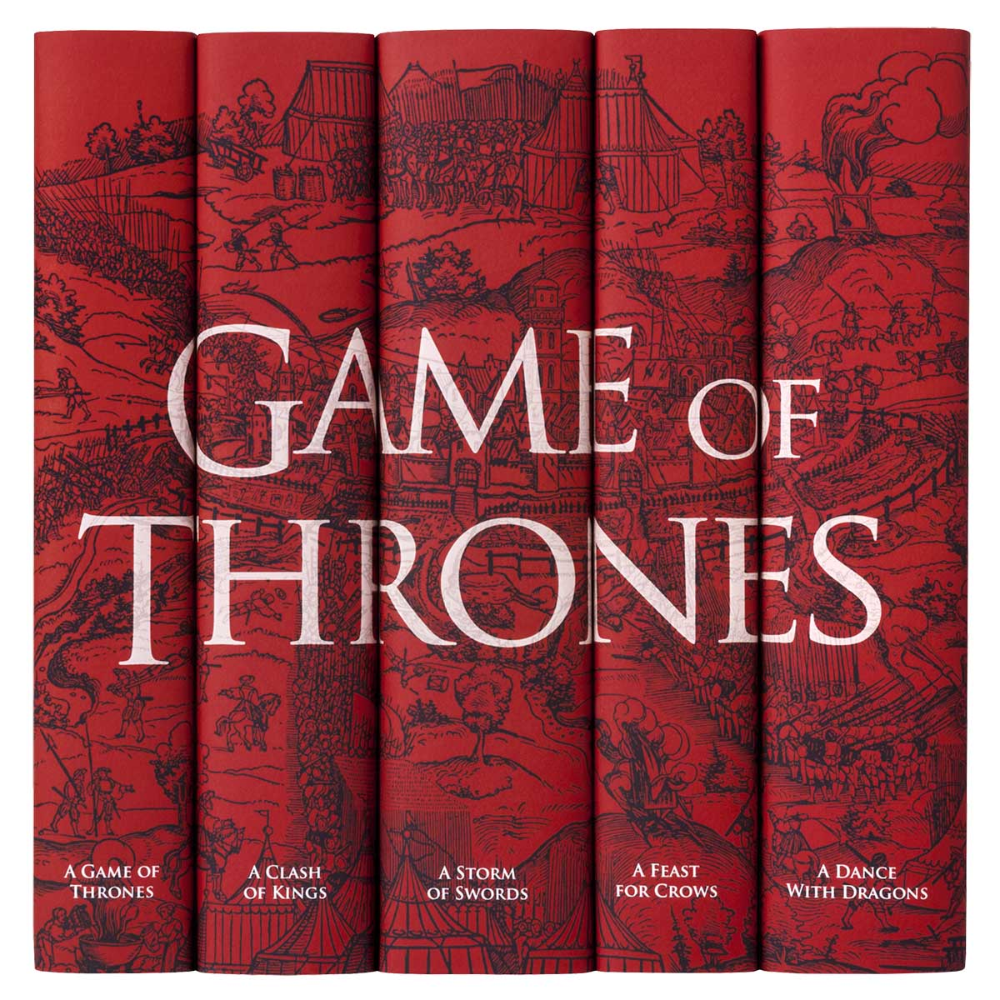
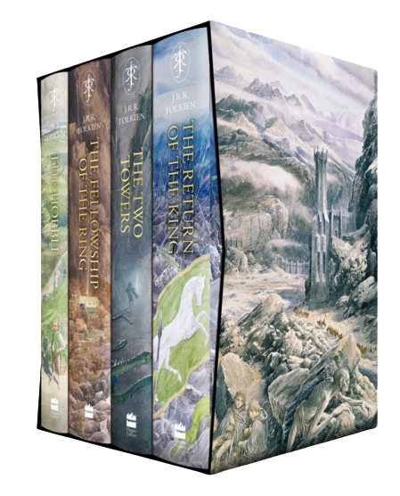
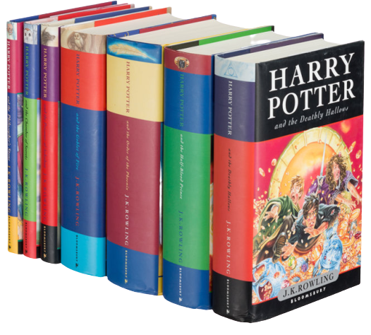
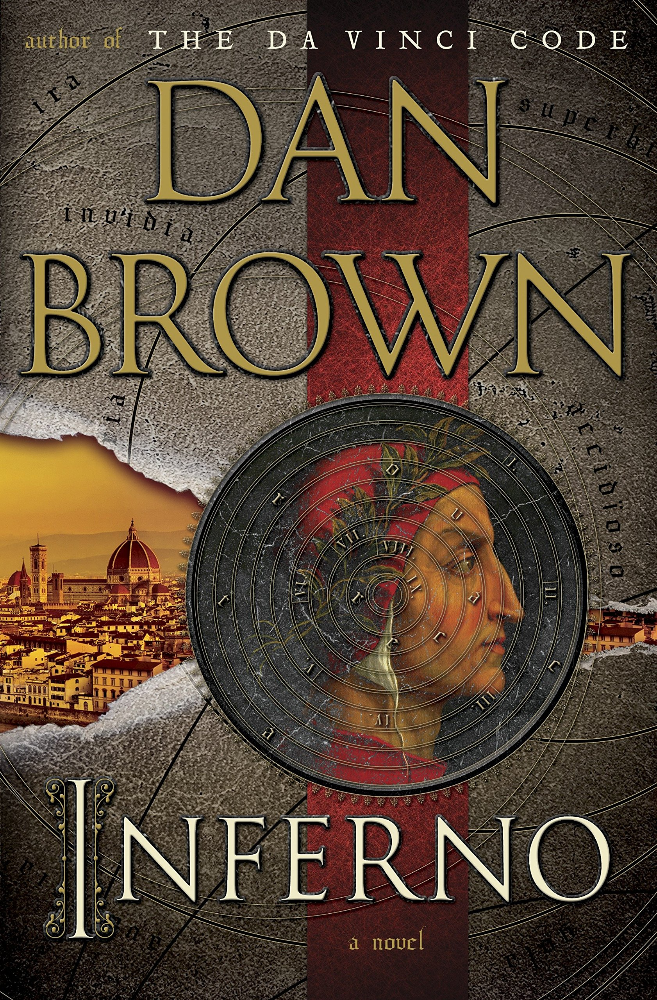

A Song of Ice and Fire
A Song of Ice and Fire is a series of epic fantasy novels by the American novelist and screenwriter George R. R. Martin. He began the first volume of the series, A Game of Thrones, in 1991, and it was published in 1996. Martin, who initially envisioned the series as a trilogy, has published five out of a planned seven volumes. The fifth and most recent volume of the series, A Dance with Dragons, was published in 2011 and took Martin six years to write. He is currently writing the sixth novel, The Winds of Winter. A seventh novel A Dream of Spring is planned.
Author: George R.R. Martin
Genre: high fantasy, drama, adventure, thriller
The Lord Of the Rings
The Lord of the Rings is an epic[1] high-fantasy novel written by English author and scholar J. R. R. Tolkien. The story began as a sequel to Tolkien's 1937 fantasy novel The Hobbit, but eventually developed into a much larger work. Written in stages between 1937 and 1949, The Lord of the Rings is one of the best-selling novels ever written, with over 150 million copies sold.
Author: J.R.R. Tolkien
Genre: fantasy, adventure
Harry Potter book series
Harry Potter is a series of fantasy novels written by British author J. K. Rowling. The novels chronicle the lives of a young wizard, Harry Potter, and his friends Hermione Granger and Ron Weasley, all of whom are students at Hogwarts School of Witchcraft and Wizardry. The main story arc concerns Harry's struggle against Lord Voldemort, a dark wizard who intends to become immortal, overthrow the wizard governing body known as the Ministry of Magic and subjugate all wizards and Muggles (non-magical people).
Author: J.K. Rowling
Genre: Fantasy, drama, young adult fiction, mystery, thriller
Three Comrades

Three Comrades (German: Drei Kameraden) is a novel first published in 1936 by the German author Erich Maria Remarque. It is written in first person by the main character Robert Lohkamp, whose somewhat disillusioned outlook on life is due to his horrifying experiences in the trenches of the First World War's French-German front. He shares these experiences with Otto Köster and Gottfried Lenz, his two comrades with whom he runs an auto-repair shop in late 1920s Berlin.
Author: E.M. Remarque
Genre: war novel, drama
The Godfather

The Godfather is a crime novel by American author Mario Puzo. Originally published in 1969 by G. P. Putnam's Sons, the novel details the story of a fictional Mafia family in New York City (and Long Beach, New York), headed by Vito Corleone. Puzo's dedication for The Godfather is "For Anthony Cleri". The epigraph for The Godfather is "Behind every great fortune there is a crime. - Balzac." The novel covers the years 1945 to 1955 and provides the back story of Vito Corleone from early childhood to adulthood.
Author: M. Puzo
Genre: crime novel, drama, thriller, detective
The Great Gatsby

The Great Gatsby is a 1925 novel written by American author F. Scott Fitzgerald that follows a cast of characters living in the fictional towns of West Egg and East Egg on prosperous Long Island in the summer of 1922. Many literary critics consider The Great Gatsby to be one of the greatest novels ever written. The story of the book primarily concerns the young and mysterious millionaire Jay Gatsby and his quixotic passion and obsession with the beautiful former debutante Daisy Buchanan.
Author: F.S. Fitzgerald
Genre: romance, tragedy, drama
The Alchemist

The Alchemist (Portuguese: O Alquimista) is a novel by Brazilian author Paulo Coelho that was first published in 1988. Originally written in Portuguese, it became a widely translated international bestseller.[1][2] An allegorical novel, The Alchemist follows a young Andalusian shepherd in his journey to the pyramids of Egypt, after having a recurring dream of finding a treasure there.
Author: P. Coelho
Genre: quest, adventure, fantasy
The Night in Lisbon

The Night in Lisbon is a novel by Erich Maria Remarque published in 1962. It revolves around the plight of two German refugees in the opening months of World War II. One of the refugees relates their story during the course of a single night in Lisbon in 1942. The story he recounts is mainly a romantic one, and also contains a lot of action with arrests, escapes and near-misses. The novel is realistic, Remarque was himself a German refugee and provides insight into refugee life in Europe during the early days of the war.
Author: E.M. Remarque
Genre: war novel, drama, romance
Inferno
Inferno is a 2013 mystery thriller novel by American author Dan Brown and the fourth book in his Robert Langdon series, following Angels & Demons, The Da Vinci Code and The Lost Symbol. The book was published on May 14, 2013, ten years after publication of The Da Vinci Code (2003), by Doubleday.[1] It was number one on the New York Times Best Seller list for hardcover fiction and Combined Print & E-book fiction for the first eleven weeks of its release.
Author: D. Brown
Genre: mystery, thriller, conspiracy fiction